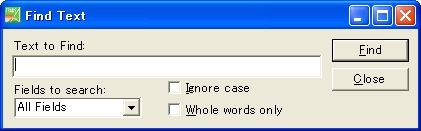

4.4.3. Search and Replace¶
You can search and replace text while in Edit Mode.
4.4.3.1. Find Text¶
While in Edit Mode, select Edit ‣ Search ‣ Quick Search from the menu. Alternately, use the Ctrl+F keyboard shortcut.
Note
The Ctrl+F keyboard shortcut is context-sensitive; when you are not in Edit Mode, it will call up the Find Memory/Glossary Entry dialog.
The Find Text dialog appears:

Find Text Dialog
Fill in the appropriate search conditions.
| Field | Description |
|---|---|
| Text to Find: | The text you wish to find |
| Fields to search: | The fields you wish to search.
|
| Ignore case: | Ignore case for your search |
| Whole words only: | Only match whole words. For instance, if you entered “bet” in Text to Find, the search will retrieve “bet” but not “better”. |
| Find | Execute the search |
| Close | Close the Find Text dialog window. |
When you are finished setting up your search parameters, click Find. If the search found a match, clicking Find again will find the next occurrence of your search term.
When you are finished searching, click Close.
4.4.3.2. Replace Text¶
While in Edit Mode, select Edit ‣ Replace from the menu. Alternately, use the Ctrl+H keyboard shortcut.
Note
The replace command is context-sensitive. When you are not in Edit Mode, it will call up the Replace Text dialog box. Otherwise, it calls up the Search window in Replace mode. See Search & Replace for details.
The Replace Text dialog appears:

Replace Text Dialog
Fill in the appropriate search conditions.
| Field | Description |
|---|---|
| Text to Find: | The text you wish to find |
| Replacement Text: | The text you want to replace it with |
| Fields to search: | The fields you wish to search.
|
| Ignore case: | Ignore case for your search |
| Whole words only: | Only match whole words. For instance, if you entered “bet” in Text to Find, the search will retrieve “bet” but not “better”. |
| Find Next: | Find the next occurrence of the search term. |
| Replace: | Replace the current match with the replacement text. |
| Replace All: | Replace all occurrences of Text to Find with Replacement Text in the search fields. |
| Close | Close the Find Text dialog window. |
When you are finished setting up your search parameters, click Find Next. If the search found a match, clicking Find Next again will find the next occurrence of your search term. Clicking Replace will replace that match with the replacement text, and search for the next match.
Click Replace All to replace all occurrences of Find Text with Replace Text in the search fields.
When you are finished searching and replacing, click Close.